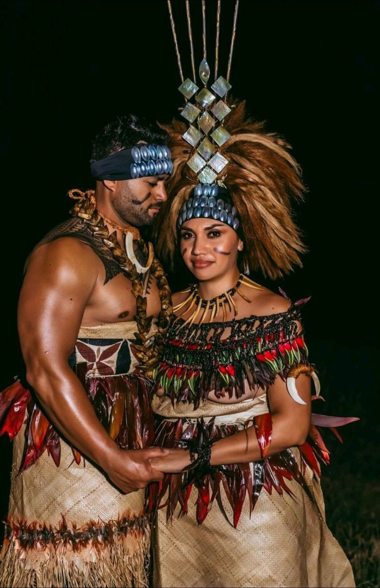
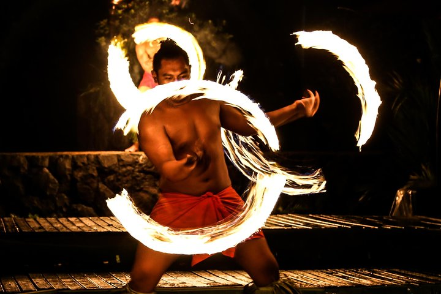
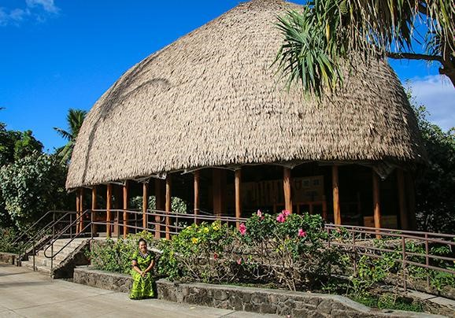
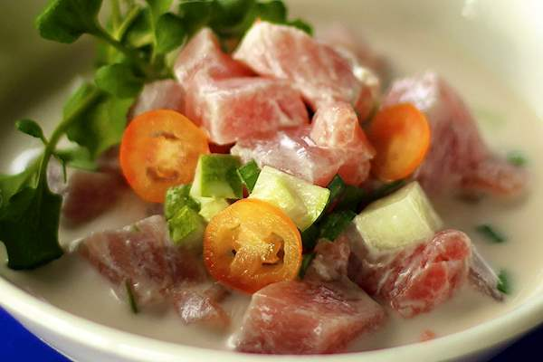
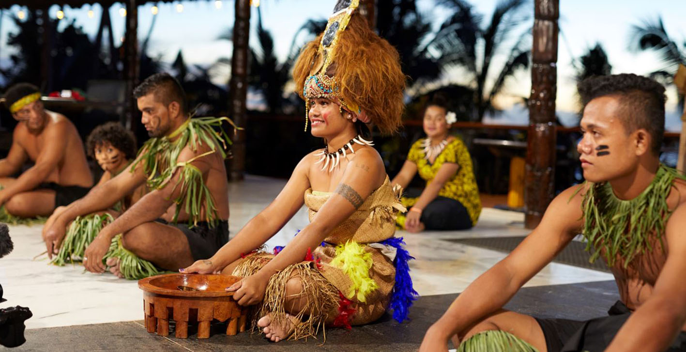
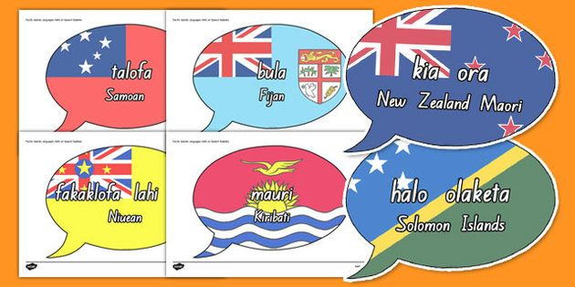

Clothing
Traditional clothing in the Pacific Islands varies by region and is often made from natural materials like bark cloth, coconut fiber, and feathers.

Dances
Traditional dances in the Pacific Islands are an important part of cultural expression and are often performed during ceremonies and celebrations.

Houses
Traditional houses in the Pacific Islands are built using local materials and are designed to withstand the tropical climate.

Food
Traditional foods in the Pacific Islands reflect the rich biodiversity of the region and often feature fresh seafood, tropical fruits, and root vegetables.

Hospitality
Traditional hospitality in the Pacific Islands is centered around the concept of "faaaloalo" (respect) and the practice of sharing food and resources with guests and community members.

Language
Many Pacific Islander languages are endangered, but efforts are being made to preserve and revitalize them through education and cultural programs.